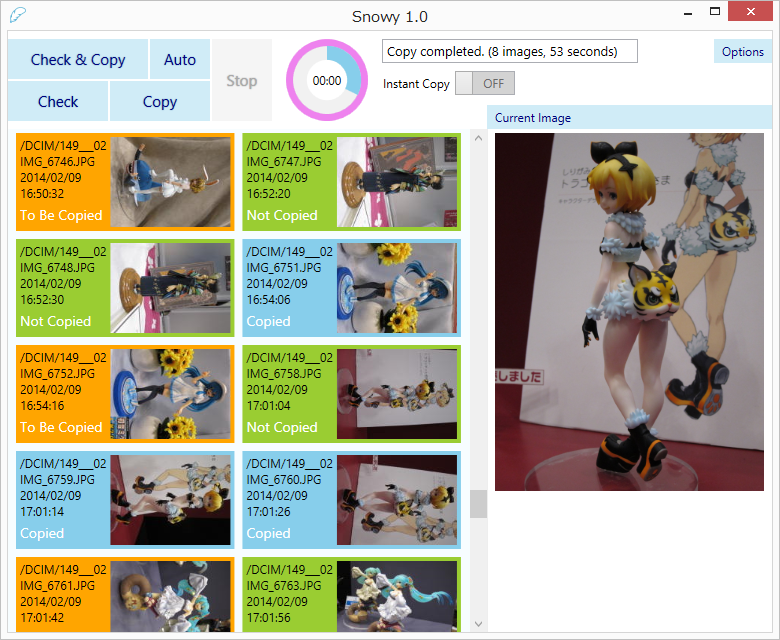
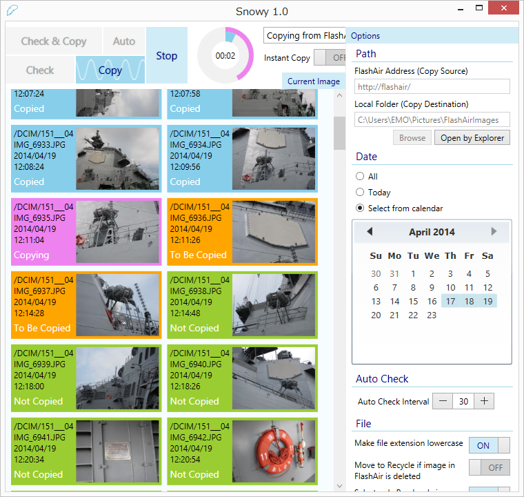

Snowy is a Windows desktop app to copy images from FlashAir by a wireless connection. You can copy images in bulk or select from thumbnails one by one. Also you can make this app check new images automatically at a regular interval.


About figures
- TAIL-SLAP : 月読鎖々美 いなばのしろうさぎ Ver
- はこむす : 僕の前に人は居ない僕の後ろに君は居る (常月まとい)
- 林檎連盟 : 初音ミク サマーメモリー
- ReplyFrom : トラコッティと虎神さま
- 柳生敏之 : 初音ミク
Requirements
- Windows 7 or newer
- .NET Framework 4.5.2
Tested on Windows 10 with SD-WB008G, SD-WC016G (W-02), SD-WE016G (W-03) and SD-UWA032G (W-04).
Download
Download
Ver 1.9.0 2020-7-30
Install
No installation is required.
Settings file will be saved in the following folder.
[system drive]\Users\[user name]\AppData\Roaming\SnowyImageCopy\
Remarks
- Before using this app, a wireless connection to FlashAir must be established. In addition, other network connections (regardless of wireless or wired) must be disabled temporarily because in AP (Access Point) mode, which is default, FlashAir needs to become virtually the sole access point. To use other network connections simultaneously, FlashAir has to be switched to STA (Station) mode or Internet Pass-Thru mode.
- The thumbnail of an image not copied to PC yet is shown only when it is a JPEG image.
- A RAW image can be copied as well. After copied to PC, if its image format is supported by Microsoft Camera Codec Pack, it will be shown in the thumbnail and in current image.
- A color profile of a monitor will be reflected to current image only.
- "Timeout duration" is the waiting time length for each request out of a number of requests sent from this app to FlashAir during check or copy. If timeout occurs frequently, try making it longer.
- When "Customize folder name for each date" is on, the string for date format will be shown in the textbox. You can make some changes such as inserting "-" or "_" between year, month and date (e.g. yyyy-MM-dd).
- When "Not select once copied image on check" is on, the maximum number of images to be recorded as copied will be shown in the textbox. You can change this number by clicking the texbox ranging from 10,000 to 100,000.
- If you usually delete images in FlashAir after copied to PC, it is recommended not to use "Move to Recycle Bin if image in FlashAir is deleted" function.
Command Line
When starting from command line, the following options are available.
| /autocheck | Start auto check at startup. |
| /minimized | Make window state minimized at startup. |
| /recordlog | Record download log from FlashAir. Log file will be saved at the same folder as settings file. |
About Feather
Feather comes from FlashAir's unofficial mascot character, Hirameki Sora.
License
- MIT License
Libraries
Developer
- emoacht (emotom[atmark]pobox.com)